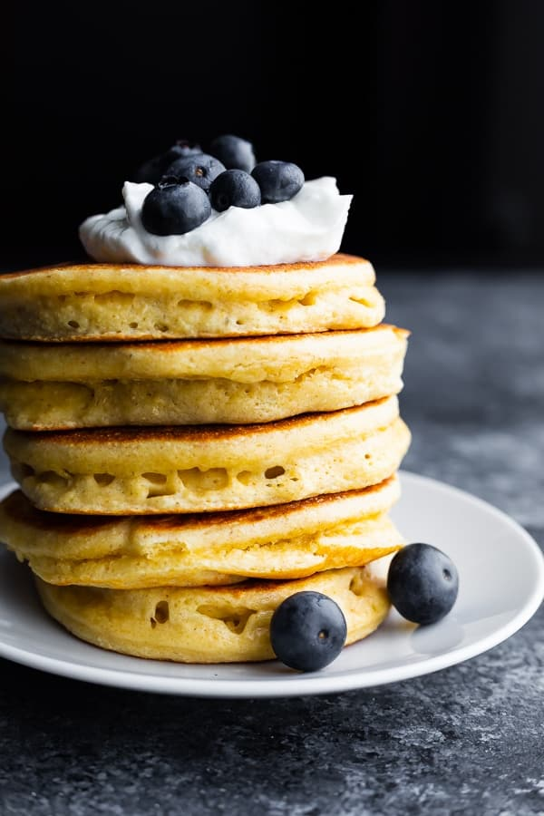
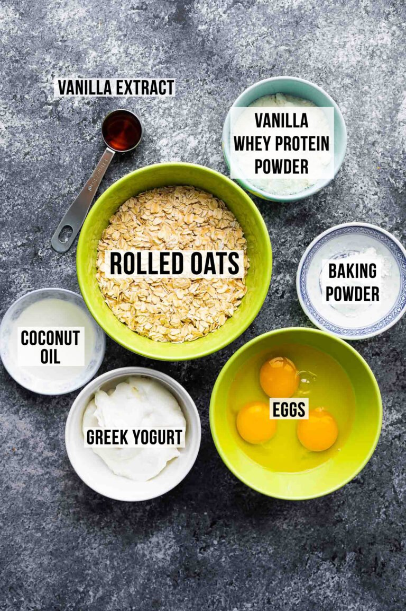
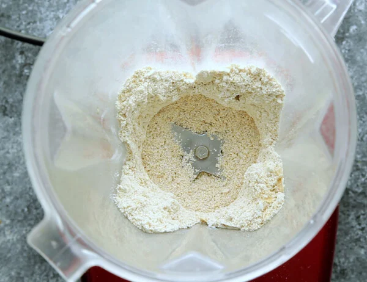
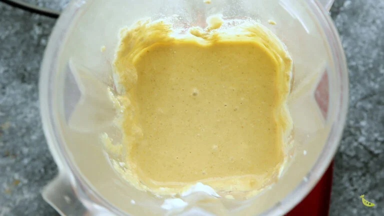
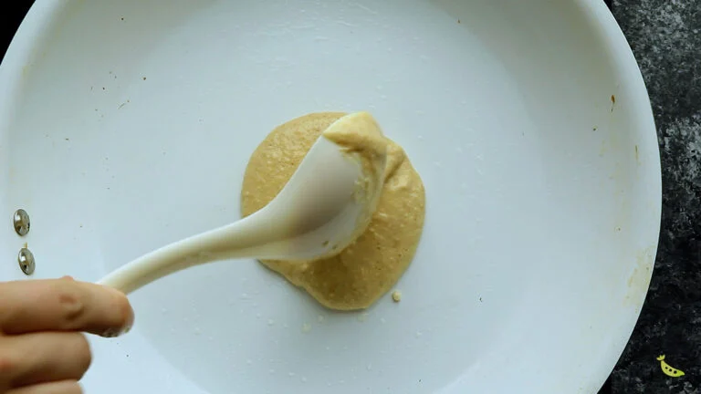

My Recipe of Protein Pancake

Introduction
Today we will be making one of my favourite food for breakfeast which is Protein Pancakes. I eat it so often in the morning because it is a great source of protein (10g per pancake) and a tasty meal to start off the day.
Ingredients (For 4-5 Pancakes)

Preperation Time: 15 minutes
- 0.75 cups rolled oats 135 g.
- 1.5 teaspoons baking powder.
- ½ scoop vanilla whey protein powder.
- 1.5 eggs.
- ¼ cup plain greek yogurt 120 g.
- ¼ teaspoon vanilla extract.
- 1 tablespoons coconut oil melted; swap for butter or olive oil.
- ½ tablespoon maple syrup
Instructions
- Blend Oats- Add the oats to a blender, then blend for 30 seconds- 1 minute, until powdery texture.

- Blend remaining ingredients- Add the baking powder, protein powder, eggs, greek yogurt, vanilla extract, melted coconut oil and maple syrup. Place the lid on the blender, and blend until mixture is completely combined and no pockets of oat flour remain.

- Cook pancakes- Grease a nonstick pan and heat over medium heat. Cook ¼ cup portions of pancakes for roughly 2 minutes on the first side and 1 minute on the second.

- Enjoy! Top your pancakes with extra yogurt, fresh fruit and maple syrup.